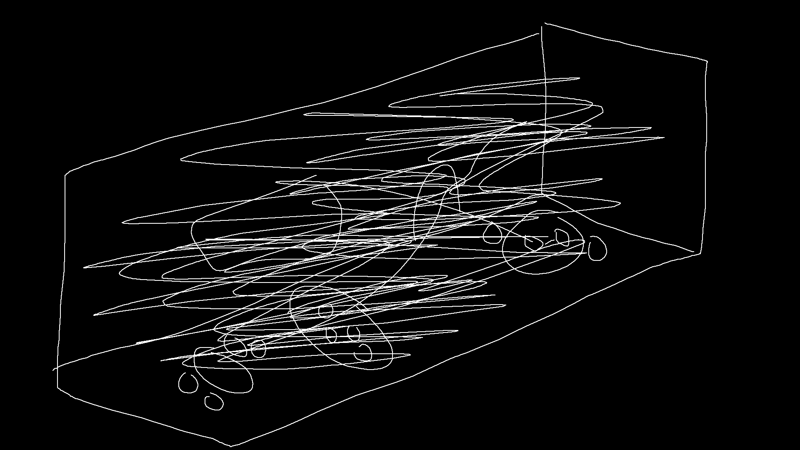

==>

Light filled the room. It was beaming out from the top of the mysterious machine. It made a beaming sound like kind of like water flushing out, but in this case it was light. Apollo and Tarda both made a gasping sound as people all around turned to see what was happening.
Dusty: WHAT DID YOU GUYS DO!!??
The light slowly started fading and everyone hesitantly came closer to the machine. On top of it stood a chess board that was glowing and had floating pieces.
==>Go Back